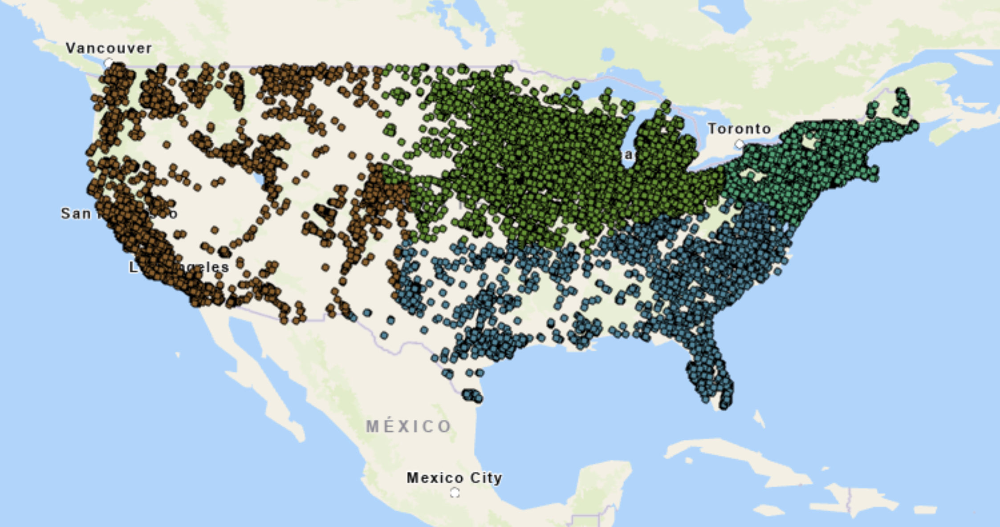
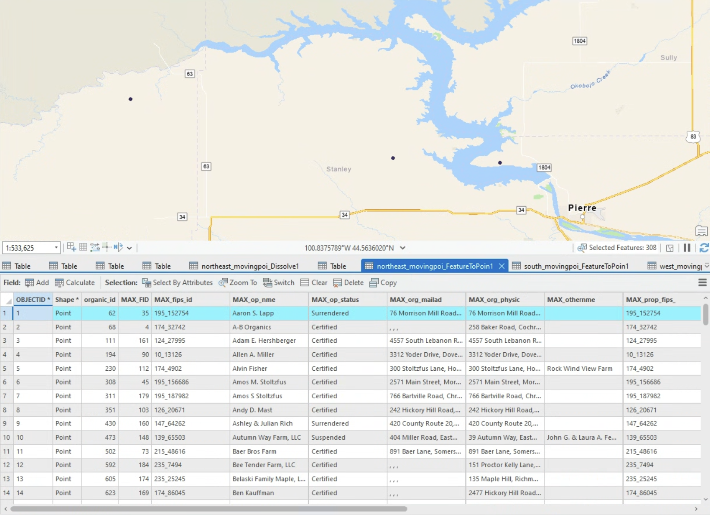
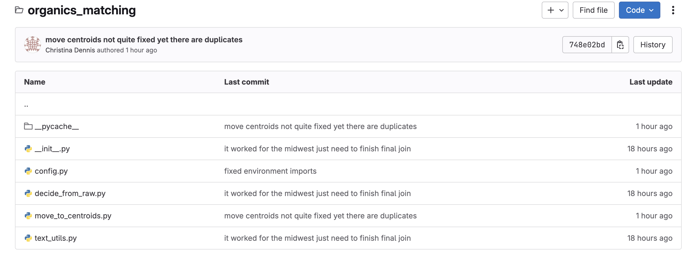

Organic Farm Map Project
Steps of the project:
Geocoded Integrity organic farm database coords assesed, failed coordinates redone using Geoapify

Working with grad student Christina Dennis, process created to validate imprecise geocoding using nearby census properties

Inaccurate points were moved and added to national shapefile of organic farms, shown atop page